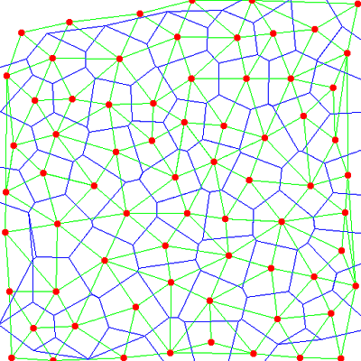
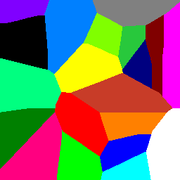
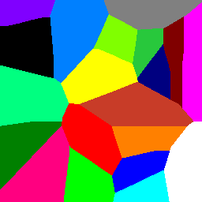

A Voronoi diagram shows a scattered of points in a plane, with each point assigned its own region. The region is defined as the zone where the point is the closest point to an observer on the plane.
It's a natural divsion of space, and Voronoi diagrams have may uses. However they are rather tricky to calculate. The discrete Voronoi function calculate Voronoi regions over a binary image.
 

The seeds are passed in in an integer array, with the background set to -1. Normally each seed will have a unique integer values, though this is not essential. We then represent the seeds as a binary image, and do a distance transform. We then sort all the pixels by value, and, starting from the closest, fill them to the value of the nearest neighbour.
It doesn't produce perfect results because of edge effects and discretisaton problems. But it gives a pretty good approximation to the Voronoi diagram, and much easier than floating-point based methods.